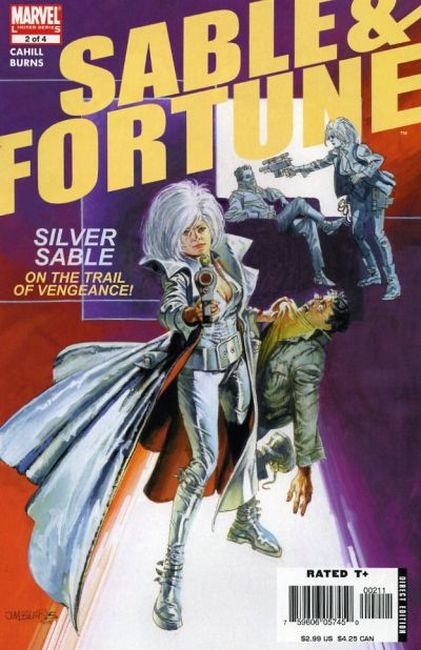
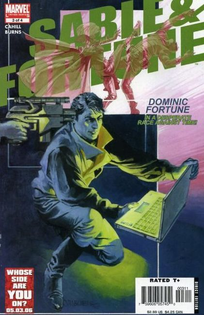
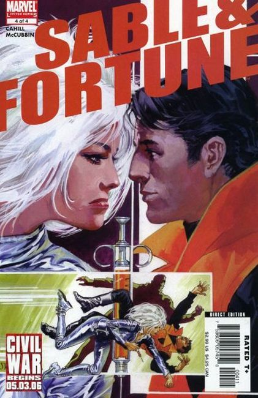

Silver Sable is leader of the unstoppable Wild Pack and the world's greatest mercenary! But times change...the Pack has gotten so big it no longer resembles the team Sable once led-and when evidence points to a traitor, Sable will stop at nothing until she finds him! Enter a brash young private detective calling himself Dominic Fortune, who's out to make a name in the world of international espionage! With Sable branded a has-been-and Fortune's star ascending-they're a match made in heaven...as long as Fortune shuts up and follows Sable's orders!

Mercenary Silver Sable and dashing rogue Dominic Fortune get along like oil and fire...but when they find themselves plunged into dangerous international conspiracy, they'd better learn to put aside their differences-or this is going to be a short series! As Sable confronts the man who usurped her Wild Pack mercenaries, Fortune finds himself out of his league in the spy game! Will he rise to the occasion?

Silver Sable's finally come face-to-face with the man who betrayed her-and usurped the Wild Pack! Dominic Fortune's in a race against time-if he can't stop a madman from activating a network of sleeper agents, the world may be forfeit! But the biggest danger of all is-how long until Sable & Fortune's egos manage to break up their partnership?

Dominic Fortune finds himself at a bar, drowning his irritation with his fledgling partnership with Silver Sable...unfortunately, the world doesn't want to leave him alone! It's a fast-paced, no-holds-barred race to the finish to stop a rogue enemy agent from carrying out his programming! Unfortunately, to stop him, Sable ↦ Fortune will have to learn to keep their hands off each other...each other's throats, that is!